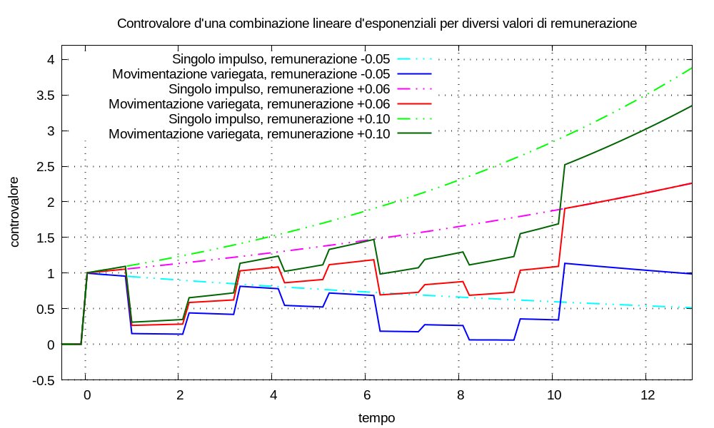
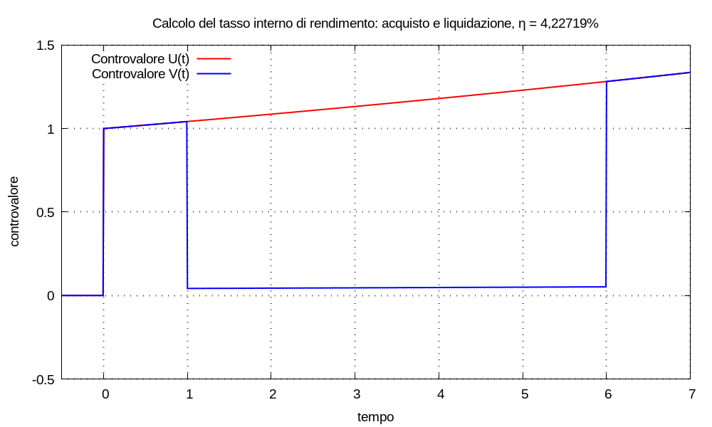
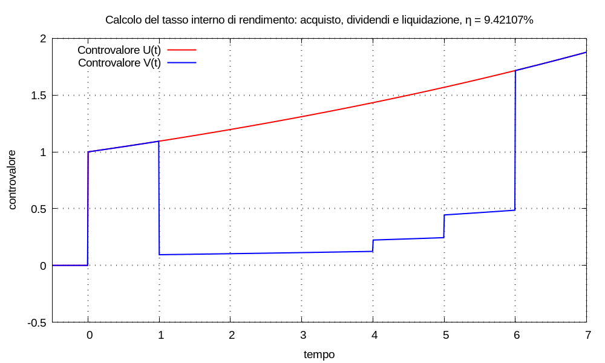

In elettrotecnica un ponte di misura è uno strumento di misura di cui è regolabile una grandezza caratteristica; applicato il ponte a un altro dispositivo, il misurando, oggetto del processo di misura, si regola la grandezza fino a che il ponte e il misurando sono in equilibrio tra loro; in questa condizione il valore della grandezza caratteristica del ponte permette il calcolo del valore d’una grandezza caratteristica del misurando.
---------------
| alimentazione |
| esterna |
---------------
!
| giacenza iniziale
v
------------
| |<--------------
| | | uscite titolo =
| | | entrate multimetro
| | |
| | --------------------
| multimetro | | titolo finanziario |
| | --------------------
| | ^
| | | entrate titolo =
| | | uscite multimetro
| |---------------
------------
|
| costi, commissioni e tasse
v
--------------
| dissipazione |
--------------
Nel nostro contesto: è possibile utilizzare il multimetro finanziario come “ponte di misura” nei confronti di qualsiasi titolo finanziario misurando di cui sia nota la movimentazione finanziaria.
Facciamo prima un ragionamento solo matematico. Consideriamo un multimetro, con remunerazione non specificata, e definiamo l’ingresso:
M(t) = Cm δ(t - tm)
senza perdita di generalià poniamo tm = 0 e Cm = 1; sappiamo che la risposta risulta:
U(t) = Cm u(t - tm) esp[λ (t - tm)] = u(t) esp(λ t)
ora definiamo l’ingresso:
N(t) = Cm δ(t - tm) + Σk Ck δ(t - tk) = δ(t) + Σk Ck δ(t - tk)
in cui la sommatoria è estesa all’indice k tra 0 e K; senza perdita di generalità scegliamo la numerazione degl’impulsi in modo che tk ≤ tk+1 e quindi: t0 sia l’istante maggiormente proiettato verso il passato (cioè il primo a sinistra sull’asse dell’ascisse); tK sia l’istante maggiormente proiettato verso il futuro (cioè l’ultimo a destra sull’asse dell’ascisse).
Ammettiamo che sia sempre possibile scegliere una scala per gl’istanti tk, sul calendario finanziario, tale che tutti gl’impulsi accadano dopo tm, cioè tm < t0.
Sappiamo che la risposta del multimetro risulta:
V(t) = u(t) esp(λ t) + Σk Ck u(t - tk) esp[λ (t - tk)] = U(t) + Σk Ck u(t - tk) esp[λ (t - tk)]
La figura qui sotto mostra le risposte: U(t) al singolo impulso unitario; V(t) in cui al singolo impulso unitario è aggiunta una movimentazione variegata d’impulsi, per differenti valori della remunerazione λ.

Dalla figura sembra esistere un valore di λ tale U(t) = V(t) per valori di tempo t ≥ tK; cioè sembra possibile applicare a un multimetro un ingresso del tipo N(t) e poi regolare λ fino a ottenere quella condizione. Con l’arbitrarietà di chi fa ciò che gli pare: definiamo configurazione d’equilibrio tra i due ingressi M(t) e N(t) quel valore di remunerazione e la conseguente relazione tra le risposte; indichiamo la remunerazione d’equilibrio con λequ.
Può essere utile riformulare la condizione d’equilibrio con le seguenti parole: per valori del tempo t ≥ tk i due ingressi M(t) e N(t) sono equivalenti, in quanto generano risposte uguali.
Ora dimostriamo se la condizione d’equilibrio esiste sempre, oppure no, e come si calcola la corrispondente remunerazione.
Ricordiamo che la risposta del multimetro al singolo impulso unitario risulta:
U(t) = u(t) esp(λ t)
e riconsideriamo il controvalore:
V(t) = U(t) + Σk Ck u(t - tk) esp[λ (t - tk)]
attualizziamo tutti gl’impulsi d’entità Ck all’istante tK:
V(t) = U(t) + u(t - tK) esp[λ (t - tK)] Σk Ck esp[λ (tK - tk)]
Osserviamo che all’istante t = 0: solo il gradino di Heaviside in U(t) è unitario, gl’altri sono nulli; perciò, quali che siano gl’impulsi agl’istanti tk: risulta sempre V(0) = U(0) = 1.
All’istante t = tK tutti i gradini di Heaviside sono pari a uno e risulta:
V(tK) = esp(λ tK) + esp[λ (tK - tK)] Σk Ck esp[λ (tK - tk)]
⇒ V(tK) = esp(λ tK) + Σk Ck esp[λ (tK - tk)]
⇒ V(tK) = esp(λ tK) + esp(λ tK) Σk Ck esp(- λ tk)
⇒ V(tK) = esp(λ tK) [1 + Σk Ck esp(- λ tk)]
la condizione d’equilibrio s’ottiene se risulta V(tK) = U(tK) = esp(λ tK) cioè:
esp(λ tK) = esp(λ tK) [1 + Σk Ck esp(- λ tk)]
⇒ 1 = 1 + Σk Ck esp(- λ tk)
⇒ 0 = Σk Ck esp(- λ tk)
Osserviamo che: allo scopo di risolvere quest’equazione in funzione di λ, è possibile il cambiamento di variabile tk = τk - T (τ è la lettera greca tau) che ci permette di cambiare l’origine dei tempi:
⇒ 0 = Σk Ck esp[- λ (τk - T)] = Σk Ck esp(- λ τk) esp(λ T)
⇒ 0 = Σk Ck esp(- λ τk)
tra le infinite scelte possibili quella piú conveniente è, probabilmente, porre τ0 = 0.
Osservazione Nel caso in cui τk = k risulta:
0 = Σk Ck esp(- λ k) = Σk Ck esp(λ)-k = Σk Ck (1 + J)-k = Σk Ck ÷ (1 + J)k
Non conosco teoremi che dimostrino l’esistenza della soluzione per qualunque combinazione d’impulsi, cioè l’esistenza d’un valore λ che annulli l’espressione; in ogni caso si possono usare algoritmi numerici iterativi per cercare gli zeri; in modo equivalente a ciò che si farebbe ruotando la manopola del multimetro di qua e di là, fino a trovare l’equilibrio (come quando si regola la temperatura dell’acqua per farsi lo shampoo: calda, fredda, calda… giusta!).
Come si forma la movimentazione di capitali per l’inserzione a ponte del multimetro?
N(t) = ... - 100 u(t - tk) + ...
N(t) = ... + 100 u(t - tk) + ...
N(t) = ... + 5 u(t - tk) + ...
N(t) = ... - 2 u(t - tk) + ...
Formato l’ingresso N(t): stabiliamo di denominare la condizione d’equilibrio tra gl’ingressi M(t) e N(t) come condizione d’equilibrio tra il multimetro e il titolo finanziario.
Prelievi, versamenti, cedole e dividendi contribuiscono a determinare la condizione d’equilibrio al lordo di tasse e costi. Se s’aggiungono tasse e costi alla movimentazione: si determina la condizione d’equilibrio al netto di tasse e costi.
Se riusciamo a determinare la condizione d’equilibrio λequ: possiamo denominare il corrispondente rendimento effettivo ηequ = expm1(λequ) come tasso interno di rendimento (tir) della risposta V(t), lordo o netto a seconda della movimentazione considerata.
Esempio (acquisto e liquidazione) Supponiamo d’acquistare un titolo al prezzo 1,0 e di liquidarlo dopo 5 anni al prezzo 1,23; vogliamo calcolare il tasso interno di rendimento.
Posto tm = 0 la movimentazione di giacenza iniziale del multimetro è:
M(t) = δ(t - t0) = δ(t)con le posizioni:
t0 = 1 Δ t = 5 t1 = t0 + Δ t = 1 + 5 = 6C0 = -1 C1 = 1,23la movimentazione da applicare al multimetro è:
N(t) = M(t) + C0 δ(t - t0) + C1 δ(t - t1) == δ(t) - 1 × δ(t - 1) + 1,23 × δ(t - 6)I controvalori risultano:
U(t) = u(t - tm) esp[λ (t - tm)] = u(t) esp(λ t)V(t) = U(t) + C0 δ(t - t0) esp[λ (t - t0)] + C1 δ(t - t1) esp[λ (t - t1)] == U(t) - δ(t - 1) esp[λ (t - 1)] + 1,23 δ(t - 6) esp[λ (t - 6)]La remunerazione d’equilibrio si calcola trovando lo zero dell’uguaglianza:
0 = C0 esp(- λ t0) + C1 esp(- λ t1)con il cambiamento di variabile τ = t - 1, risulta τ0 = 0 e τ1 = 5; allora:
0 = C0 esp(- λ τ0) + C1 esp(- λ τ1) = C0 + C1 esp(- λ τ1)in questo caso particolare non abbiamo bisogno d’un algoritmo numerico:
λequ = - log(- C0 ÷ C1) ÷ τ1 = - log(1 ÷ 1,23) ÷ 5 ≈ 0,04140283387686523e quindi ηequ = espm1(λequ) = 4,22719%.

Esempio (acquisto, dividendi e liquidazione) Supponiamo d’acquistare un titolo al prezzo 1,0 e di liquidarlo dopo 5 anni al prezzo 1,23; al terzo anno dopo l’acquisto l’emittente paga un dividendo di 0,1; al quarto anno dopo l’acquisto l’emittente paga un dividendo di 0,2; vogliamo calcolare il tasso interno di rendimento.
Posto tm = 0 la movimentazione di giacenza iniziale del multimetro è:
M(t) = δ(t - t0) = δ(t)con le posizioni:
t0 = 1 t1 = t0 + 3 = 4 t2 = t0 + 4 = 5 t3 = t0 + 5 = 6C0 = -1 C1 = 0,1 C2 = 0,2 C3 = 1,23la movimentazione da applicare al multimetro è:
N(t) = M(t) + Σk = 0→3 Ck δ(t - tk)I controvalori risultano:
U(t) = u(t - tm) esp[λ (t - tm)] = u(t) esp(λ t)V(t) = U(t) + Σk = 0→3 Ck u(t - tk) esp[λ (t - tk)]La remunerazione d’equilibrio si calcola trovando lo zero dell’uguaglianza:
0 = Σk = 0→3 Ck esp(- λ tk)con il cambiamento di variabile τ = t - 1, risulta:
τ0 = 0 τ1 = τ0 + 3 = 3 τ2 = τ0 + 4 = 4 τ3 = τ0 + 5 = 5allora:
0 = Σk = 0→3 Ck esp(- λ τk)in questo caso abbiamo bisogno d’un algoritmo numerico per calcolare la remunerazione d’equilibrio e risulta:
λequ = 0,0900332 ηequ = espm1(λequ) = 9,42107%